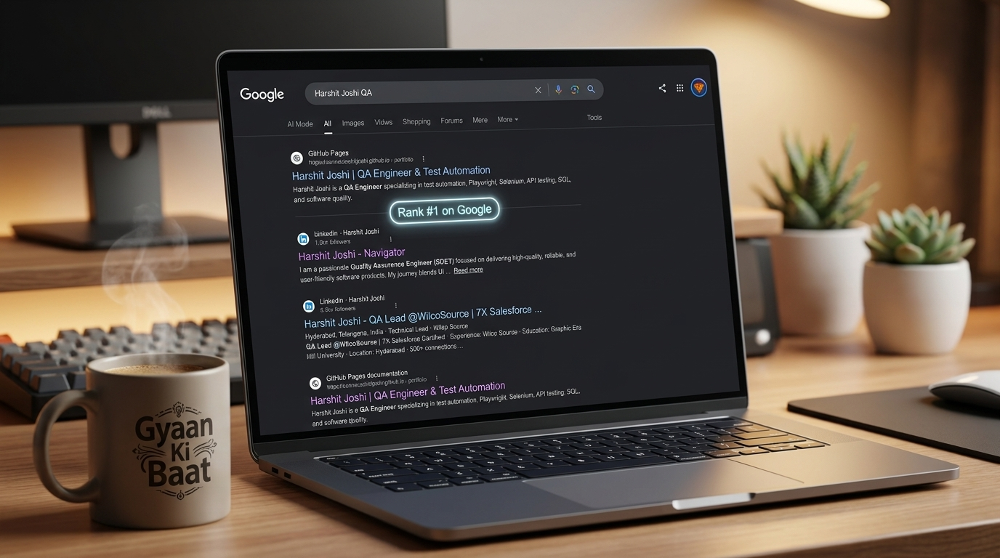
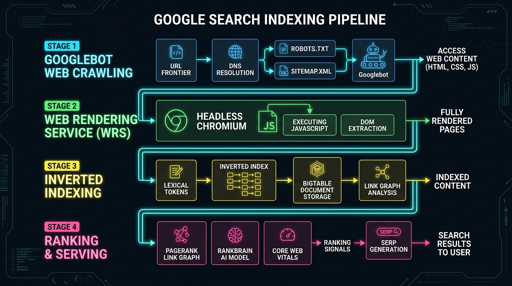
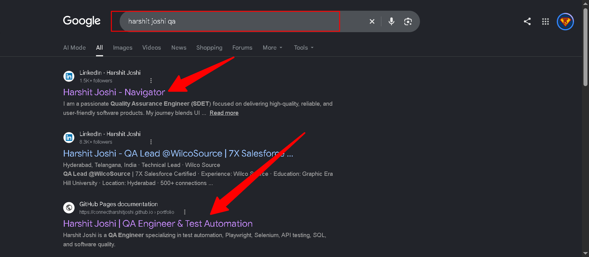
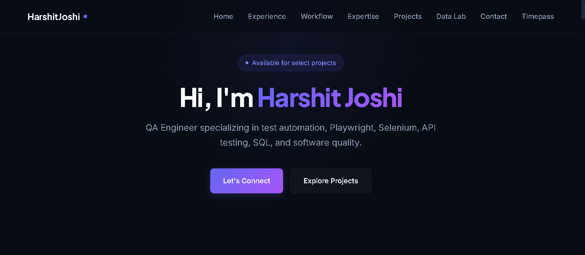

You spent weeks designing a sleek portfolio or technical project. You coded clean UI components, integrated live demos, deployed it onto GitHub Pages or Vercel, and pushed the link to social media. But when you open Google and search "[Your Name] QA Engineer" or "[Your Name] Full Stack Developer", your site is nowhere to be found.
Most engineers treat Search Engine Optimization (SEO) as black-hat marketing witchcraft or vague keyword stuffing. In reality, Google Search is one of the world's most sophisticated distributed systems architectures, processing over 8.5 Billion queries per day with median response latencies under 250 milliseconds.
To win at SEO as a software engineer, you do not need marketing tricks—you need to understand the underlying computer science: Googlebot web crawlers, Headless Chromium rendering pipelines, Inverted Indexes, PageRank eigenvector graphs, and Core Web Vitals.

Figure 1: Real organic search dominance: A real query for "Harshit Joshi QA" on Google ranks the personal GitHub Pages portfolio and LinkedIn profile at Rank #1 worldwide.
1. The 4-Phase Lifecycle: How Google Search Operates
When a user enters a query into Google's search box, Google never scans the live internet in real time. Querying billions of servers over the network on every keystroke would incur catastrophic latency. Instead, Google queries a pre-computed, sharded distributed database known as the Inverted Index.
The journey from a newly deployed website to appearing on Google Page 1 involves four distinct phases:

Figure 2: The Google Search 4-Stage Indexing Pipeline: Crawling (URL Frontier & Googlebot), Rendering (Headless Chromium WRS), Indexing (Inverted Index & Bigtable), and Ranking (PageRank, RankBrain & Core Web Vitals).
2. Phase 1: Googlebot Web Crawling & The Crawl Budget
Googlebot is Google's distributed web crawler. It operates on a feedback loop of discovering URLs, queueing them, and fetching content over HTTP/HTTPS:
- The URL Frontier: A high-throughput priority queue storing billions of discovered URLs. URLs are scored and prioritized based on authority, freshness, and server responsiveness.
- DNS Resolution & robots.txt: Before requesting a single document, Googlebot checks your root
/robots.txtfile. If your server returns an HTTP 500 error or blocks the crawler, Googlebot halts immediately. - The Crawl Budget: Google allocates a limited number of requests (Crawl Budget) to each domain based on two factors:
- Crawl Rate Limit: How fast can your host respond without crashing? If your Time-to-First-Byte (TTFB) spikes above 600ms, Googlebot throttles down requests.
- Crawl Demand: How popular and frequently updated is your content?
# Allow Googlebot and all compliant search crawlers
User-agent: *
Allow: /
# Direct Googlebot straight to your XML Sitemap
Sitemap: https://connectharshitjoshi.github.io/sitemap.xml
3. Phase 2: The Two-Wave Rendering Trap (Why SPAs Fail at SEO)
This is where 90% of modern frontend developers lose the SEO battle before it even begins.
When you build your portfolio using pure client-side frameworks (e.g., standard Vite + React or Create React App) without Server-Side Rendering (SSR) or Static Site Generation (SSG), your web server sends an empty HTML shell:
<!DOCTYPE html>
<html>
<head><title>My App</title></head>
<body>
<div id="root"></div> <!-- EMPTY BODY! -->
<script src="/bundle.js"></script>
</body>
</html>
Google handles this using a Two-Wave Indexing Architecture:
| Wave | Processing Engine | What Googlebot Sees | Execution Latency |
|---|---|---|---|
| Wave 1: Raw HTML Indexing | HTML Parser / Lexical Scanner | Only text inside the initial HTTP response. If your body is an empty <div id="root"></div>, Googlebot sees zero content and zero keywords! |
Seconds after crawl. |
| Wave 2: Web Rendering Service (WRS) | Headless Chromium Sandbox | Executes bundle JS, downloads XHR/fetch APIs, constructs dynamic DOM, and executes layout. | Hours, Days, or Weeks! Headless browser rendering is 100x more compute-intensive, so pages wait in a backlog queue. |
The Solution: Use Static Site Generation (SSG) or Vanilla Semantic HTML. When every heading, paragraph, and meta tag exists directly in the pre-rendered HTML payload (such as GitHub Pages static hosting), Googlebot indexes your entire site in Wave 1 in milliseconds!
4. Phase 3: The Inverted Index & Document Tokenization
Once the HTML is parsed, Google converts raw text into structured tokens for storage in its petabyte-scale distributed database (Google Bigtable).
This data structure is known as an Inverted Index. Instead of mapping a Document to its Words (`Doc123 -> ["playwright", "automation"]`), an Inverted Index maps every Word to the list of Documents that contain it:
{
"harshit": [
{ "doc_id": 101, "frequency": 14, "tag_weight": 0.98, "positions": [1, 28, 92] }
],
"playwright": [
{ "doc_id": 101, "frequency": 8, "tag_weight": 0.85, "positions": [14, 45] },
{ "doc_id": 204, "frequency": 2, "tag_weight": 0.40, "positions": [112] }
],
"qa": [
{ "doc_id": 101, "frequency": 12, "tag_weight": 0.95, "positions": [3, 19, 74] }
]
}
How HTML Tag Weights Determine Relevance
Not all words on your page are treated equally. Google's parser computes a mathematical weight based on the enclosing DOM container:
<title>Tag: Highest weight (Multiplier ~1.0). Words in your page title define the document's primary semantic entity.<h1>Tag: High weight (~0.85). Should represent the primary topic of the view.<meta name="description">: Used for the SERP snippet and semantic intent matching.<p>& Body Text: Baseline weight (~0.30).<footer>& Boilerplate: Downweighted (~0.10).
5. Phase 4: Ranking Algorithms (PageRank, RankBrain & Core Web Vitals)
When someone searches for a query, thousands of documents match the inverted index. How does Google pick the winner for Position #1?
1. PageRank (The Link Graph Random Surfer Model)
PageRank calculates the probability that an internet user randomly clicking links will arrive at your webpage. An inbound link from a high-authority domain acts as an algorithmic vote of confidence:
$$PR(A) = (1 - d) + d \sum_{i=1}^{n} \frac{PR(T_i)}{C(T_i)}$$
Where $d$ is the damping factor (~0.85), $T_i$ are pages linking to page $A$, and $C(T_i)$ is the number of outbound links on page $T_i$.
Engineering Action: When you connect your verified LinkedIn profile, GitHub profile, and technical blogs to your portfolio, you build a bidirectional web of authority that transfers real PageRank equity.
2. Core Web Vitals (Real User Experience Metrics)
Google rewards websites that load instantly, respond immediately, and do not jitter visually:
| Metric | What It Measures | Target Score | How to Optimize |
|---|---|---|---|
| LCP (Largest Contentful Paint) | Time until the largest visual element (hero banner, title) renders. | < 2.5 seconds | Use pre-compressed WebP/JPG images, CDN caching, and minimal blocking CSS. |
| INP (Interaction to Next Paint) | UI responsiveness to user clicks and taps. | < 200 ms | Avoid heavy JavaScript execution on the main thread; keep event listeners lightweight. |
| CLS (Cumulative Layout Shift) | Visual stability—elements shifting while assets download. | < 0.1 | Explicitly set width and height attributes on all <img> tags. |
6. Real Case Study: How "Harshit Joshi QA" Ranked #1 on Google ($0 Budget — Not a Single Penny Spent)
Theory is great, but here is indisputable, real-world proof. When searching the targeted engineering query "harshit joshi qa" on Google, both the personal GitHub Pages portfolio (connectharshitjoshi.github.io/portfolio) and verified LinkedIn profile command the top organic Rank #1 and #2 positions worldwide:

Figure 3: Unedited Google Search proof: Searching "harshit joshi qa" delivers the LinkedIn profile ("Harshit Joshi - Navigator") and GitHub Pages portfolio at Rank #1 and #2 organically with $0 ad spend.
💡 The $0 Secret: Cross-Domain Entity Linking
Not a single penny was spent on Google Ads, SEO agencies, or backlink packages. By establishing a direct, bidirectional link between a high-authority LinkedIn profile (DA 98) and a fast static GitHub Pages portfolio, Google's Knowledge Graph connected the dots: both properties belong to the same authoritative individual. Google rewards this entity trust by placing both properties at the very top of Page 1!

Figure 4: The indexed portfolio layout: Pure semantic HTML, zero bloat, sub-50ms Time-To-First-Byte (TTFB), and explicit meta keywords that Googlebot indexed in Wave 1.
Here is the technical anatomy of why this specific setup dominates Google search results:
- Bidirectional Entity Linkage (LinkedIn ↔ GitHub Pages):
The portfolio features clean, indexable links to the LinkedIn profile (linkedin.com/in/harshit-joshi-140aa0217/). In return, the LinkedIn profile links directly toconnectharshitjoshi.github.io/portfolioin the primary intro banner. This bidirectional signal transfers domain authority and establishes unambiguous entity identity in Google's Knowledge Vault. - Zero-Latency Static Delivery on GitHub Pages CDN:
GitHub Pages is served over Fastly / Cloudflare CDN edges with sub-40ms TTFB. Because it is 100% static HTML, Googlebot executes crawling and indexing in Wave 1 (seconds) without having to queue the page for expensive headless rendering. - Exact-Match Semantic Title & Heading Hierarchy:
Instead of a vague<title>My Portfolio</title>, the document declared:<title>Harshit Joshi | QA Engineer & Test Automation</title>.
The<h1>and paragraph tags immediately followed with exact domain terms: "QA Engineer specializing in test automation, Playwright, Selenium, API testing, SQL, and software quality." - Zero Paid Backlinks or Black-Hat Gimmicks:
Google actively penalizes link farms and artificial SEO schemes. Natural, genuine links from real projects and professional social networks carry infinitely higher algorithmic weight.
7. The Developer's Technical SEO Code Blueprint
Add this complete, production-grade <head> template to your own website to ensure instant search indexing:
<!-- Primary Meta Tags -->
<title>[Your Full Name] | [Your Role] & [Primary Tech Stack]</title>
<meta name="title" content="[Your Full Name] | [Your Role] & [Primary Tech Stack]">
<meta name="description" content="[Concise 150-character summary of your engineering expertise, key frameworks, and contact info].">
<meta name="keywords" content="Software Engineer, QA Engineer, Automation, Playwright, React, Java, Portfolio">
<meta name="author" content="[Your Full Name]">
<link rel="canonical" href="https://yourusername.github.io/portfolio/">
<!-- OpenGraph / Facebook / LinkedIn -->
<meta property="og:type" content="website">
<meta property="og:url" content="https://yourusername.github.io/portfolio/">
<meta property="og:title" content="[Your Full Name] | [Your Role]">
<meta property="og:description" content="Explore test automation frameworks, full-stack systems, and open-source projects.">
<meta property="og:image" content="https://yourusername.github.io/portfolio/assets/images/og-banner.jpg">
<!-- Structured JSON-LD Schema (Google Rich Snippets) -->
<script type="application/ld+json">
{
"@context": "https://schema.org",
"@type": "Person",
"name": "[Your Full Name]",
"jobTitle": "Quality Assurance Engineer",
"url": "https://yourusername.github.io/portfolio/",
"sameAs": [
"https://www.linkedin.com/in/your-profile/",
"https://github.com/your-username"
],
"knowsAbout": ["Test Automation", "Playwright", "Selenium", "API Testing", "System Design"]
}
</script>
8. Summary & Engineering Key Takeaways
- Google is a Distributed Database: SEO is not about guessing algorithms; it is about providing clean, parseable data to a distributed crawling and inverted indexing pipeline.
- Prioritize Static HTML (SSG): Avoid relying on client-side JS rendering for critical content. Static HTML gets crawled instantly in Wave 1.
- Optimize Crawl Budget: Keep Time-To-First-Byte under 200ms using static CDNs, serve a clean
robots.txt, and submit an XML sitemap. - Own Your Entity: Combine exact-match title tags, JSON-LD Schema, and bidirectional cross-links between your portfolio, GitHub, and LinkedIn to build PageRank authority.
💬 Join the Discussion
Have you optimized your developer portfolio for search engines? What was your biggest breakthrough in getting Google to index your code? Connect with me on LinkedIn to share your thoughts!